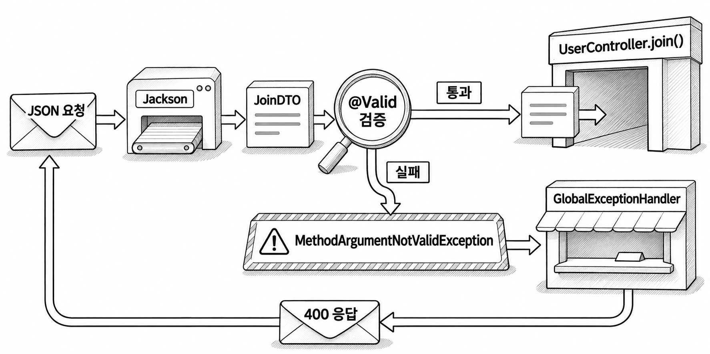
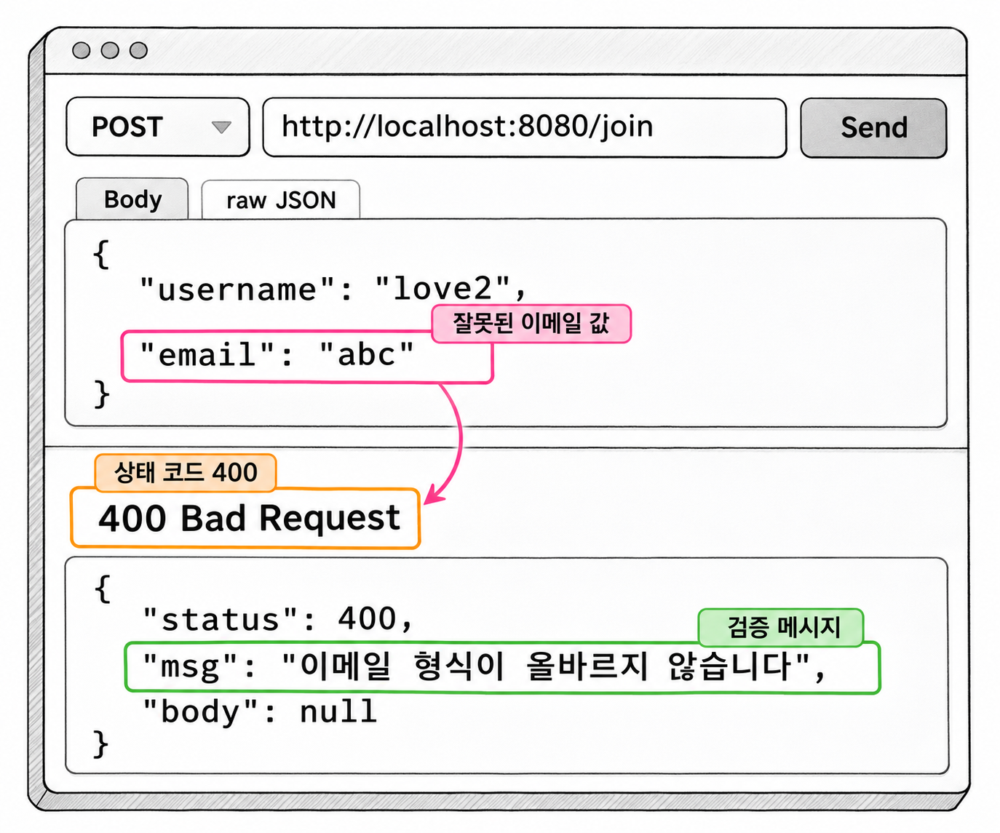

11장. 입력값 검증이란?
1. Bean Validation
10장에서 만든 회원가입 API는 들어온 값을 그대로 저장합니다. 유저네임이 두 글자여도, 이메일 자리에 abc를 넣어도 가입됩니다. username 키를 빼고 보내면 null이 DB까지 내려가고, nullable = false 제약 조건에 걸려 500 오류로 끝납니다. 이런 일을 막으려면 서버가 저장하기 전에 클라이언트가 보낸 값이 규칙에 맞는지 확인해야 합니다.
입력값 검증(validation)은 요청으로 들어온 값이 정해 둔 규칙에 맞는지 확인하고, 맞지 않으면 처리를 멈추는 일입니다. 자바에는 이 규칙을 애너테이션으로 적는 표준이 있는데, 이를 Bean Validation(빈 검증)이라고 합니다. 패키지 이름은 jakarta.validation입니다.
1.1 starter-validation 추가
Bean Validation은 규칙을 적는 애너테이션과 인터페이스만 정해 둔 명세입니다. 값을 실제로 검사하는 일은 구현체가 맡습니다. 가장 널리 쓰이는 구현체는 Hibernate Validator(하이버네이트 밸리데이터)입니다. Spring Boot에서는 spring-boot-starter-validation 스타터 하나만 추가하면 명세와 구현체가 함께 들어옵니다. 검증기(Validator)를 빈으로 등록하는 일은 자동 설정이 맡습니다.
웹 스타터 spring-boot-starter-webmvc에는 검증 기능이 없습니다. 검증 스타터를 추가하지 않으면 jakarta.validation.constraints 패키지를 찾지 못해 컴파일 단계에서 실패합니다.
기본 문법
dependencies {
implementation 'org.springframework.boot:spring-boot-starter-validation'
}의존성을 바꾼 뒤에는 Load Gradle Changes로 Gradle을 새로 고치고 서버를 다시 시작합니다. devtools의 자동 재시작은 소스 코드 변경만 반영하고, 새 라이브러리는 불러오지 않기 때문입니다.
1.2 @NotBlank · @Size · @Email
검사 규칙은 DTO의 필드 앞에 애너테이션으로 붙입니다. record라면 구성 요소 앞에 붙입니다. Bean Validation에서는 이 애너테이션도 제약 조건(constraint)이라고 부릅니다. 4장에서 본 DB의 제약 조건과 같은 말이지만, 여기서는 DB가 아니라 요청 단계에서 값을 검사합니다. 회원가입에는 다음 세 가지를 씁니다.
| 애너테이션 | 검사 내용 | null | "" | " "(공백만) |
|---|---|---|---|---|
@NotBlank | 공백을 뺀 글자가 하나 이상인 문자열 | 실패 | 실패 | 실패 |
@Size(min, max) | 글자 수가 min 이상 max 이하 | 통과 | min이 1 이상이면 실패 | 글자 수로 판단 |
@Email | 이메일 형식 | 통과 | 통과 | 실패 |
표에서 눈여겨볼 곳은 null 열입니다. @Size와 @Email은 null을 통과시킵니다. Bean Validation의 제약 조건은 대부분 "값이 있다면 이 규칙을 지켜야 한다"는 뜻이기 때문입니다. 값이 반드시 있어야 한다는 규칙은 @NotNull이나 @NotBlank가 따로 맡습니다. 그래서 꼭 받아야 하는 문자열에는 @NotBlank를 함께 붙입니다.
@Email의 형식 검사는 느슨합니다. @ 앞뒤의 모양만 보므로 ssar@nate처럼 점이 없는 주소도 통과합니다. 실제로 있는 주소인지 알려면 인증 메일 같은 별도 절차가 필요합니다.
검사에 실패했을 때 돌려줄 문장은 message 속성에 적습니다. 적지 않으면 Hibernate Validator의 기본 메시지가 쓰입니다. 클라이언트가 화면에 그대로 보여 줄 수 있도록 문장을 직접 적어 둡니다.
기본 문법
public record 요청DTO(
@NotBlank(message = "메시지")
@Size(min = 최소, max = 최대, message = "메시지")
String 필드명) {
}예제에서 쓸 @Size(max = 20)은 5장 User 엔티티의 @Column(length = 20)과 같은 숫자입니다. 엔티티의 길이 제약은 DB 테이블의 열 크기를 정합니다. DTO의 제약 조건은 그보다 앞에서, 규칙에 어긋난 값이 DB에 닿기 전에 막습니다. 두 숫자가 다르면 DTO 검사는 통과했는데 DB 저장에서 실패하는 일이 생깁니다. 그러니 두 숫자를 맞춰 둡니다.
1.3 @Valid
DTO에 제약 조건을 붙이기만 해서는 검사가 일어나지 않습니다. 컨트롤러 메서드의 파라미터 앞에 @Valid를 붙여야 스프링이 검증기를 호출합니다.
기본 문법
@PostMapping("/주소")
public ResponseEntity<?> 메서드명(@Valid @RequestBody 요청DTO reqDTO) {
}
그림 11-1에서 보듯 스프링은 먼저 요청 본문의 JSON을 Jackson으로 JoinDTO 객체로 바꿉니다. 그 직후 @Valid를 보고 검증기를 실행합니다. 규칙에 어긋난 값이 하나라도 있으면 MethodArgumentNotValidException을 던지고, join() 메서드 본문은 실행하지 않습니다. 그래서 잘못된 값은 Service와 Repository까지 내려가지 않습니다.
예제 11-1 — 회원가입 입력값 검사하기
이어서: 예제 10-3
파일명: build.gradle
plugins {
id 'java'
id 'org.springframework.boot' version '4.1.3'
id 'io.spring.dependency-management' version '1.1.7'
}
group = 'com.newtenco'
version = '0.0.1-SNAPSHOT'
java {
toolchain {
languageVersion = JavaLanguageVersion.of(21)
}
}
repositories {
mavenCentral()
}
dependencies {
implementation 'org.springframework.boot:spring-boot-h2console'
implementation 'org.springframework.boot:spring-boot-starter-data-jpa'
// 스프링 시큐리티: 넣기만 해도 모든 주소가 잠긴다. 기본 설정은 SecurityConfig에서 바꾼다
implementation 'org.springframework.boot:spring-boot-starter-security'
implementation 'org.springframework.boot:spring-boot-starter-validation'
implementation 'org.springframework.boot:spring-boot-starter-webmvc'
compileOnly 'org.projectlombok:lombok'
developmentOnly 'org.springframework.boot:spring-boot-devtools'
runtimeOnly 'com.h2database:h2'
annotationProcessor 'org.projectlombok:lombok'
// 테스트 (src/test 폴더에서만 사용)
testImplementation 'org.springframework.boot:spring-boot-starter-data-jpa-test'
testImplementation 'org.springframework.boot:spring-boot-starter-webmvc-test'
testRuntimeOnly 'org.junit.platform:junit-platform-launcher'
}
tasks.named('test') {
useJUnitPlatform() // 테스트를 JUnit으로 실행
}파일명: src/main/java/com/newtenco/blog/user/UserRequest.java
package com.newtenco.blog.user;
import jakarta.validation.constraints.Email;
import jakarta.validation.constraints.NotBlank;
import jakarta.validation.constraints.Size;
public class UserRequest {
public record JoinDTO(
@NotBlank(message = "유저네임을 입력해주세요")
@Size(min = 4, max = 20, message = "유저네임은 4~20자여야 합니다")
String username,
@NotBlank(message = "비밀번호를 입력해주세요")
@Size(min = 4, max = 20, message = "비밀번호는 4~20자여야 합니다")
String password,
@NotBlank(message = "이메일을 입력해주세요")
@Email(message = "이메일 형식이 올바르지 않습니다")
String email) {
public User toEntity(String encPassword) {
return User.builder()
.username(username)
.password(encPassword)
.email(email)
.build();
}
}
}파일명: src/main/java/com/newtenco/blog/user/UserController.java
package com.newtenco.blog.user;
import com.newtenco.blog.core.util.Resp;
import jakarta.validation.Valid;
import lombok.RequiredArgsConstructor;
import org.springframework.http.ResponseEntity;
import org.springframework.web.bind.annotation.PostMapping;
import org.springframework.web.bind.annotation.RequestBody;
import org.springframework.web.bind.annotation.RestController;
@RequiredArgsConstructor
@RestController
public class UserController {
private final UserService userService;
@PostMapping("/join")
public ResponseEntity<?> join(@Valid @RequestBody UserRequest.JoinDTO reqDTO) {
return Resp.ok(userService.회원가입(reqDTO));
}
}실행 결과
Gradle을 새로 고치고 서버를 다시 시작합니다. Postman에서 POST http://localhost:8080/join을 고르고, Body 탭의 raw · JSON에 유저네임이 두 글자인 요청을 넣어 보냅니다.
{
"username": "ab",
"password": "1234",
"email": "ab@nate.com"
}상태 코드 400과 함께 다음 응답이 옵니다.
{
"status": 400,
"msg": "Bad Request",
"body": null
}가입은 막혔지만 메시지는 Bad Request뿐입니다. 이 응답은 7장에서 만든 exUnknown()이 보낸 것입니다. MethodArgumentNotValidException은 스프링이 상태 코드를 미리 정해 둔 예외로, ErrorResponse를 구현합니다. exUnknown()은 이런 예외를 받으면 원래 상태 코드 400과 기본 문구를 돌려줍니다. 그래서 어떤 값이 왜 틀렸는지는 아직 알 수 없습니다.
username을 "love"로, email을 "love@nate.com"으로 바꿔 다시 보내면 상태 코드 200과 함께 가입된 회원 정보가 옵니다.
{
"status": 200,
"msg": "성공",
"body": {
"id": 3,
"username": "love",
"email": "love@nate.com"
}
}id가 3인 것은 data.sql이 넣은 ssar와 cos가 이미 1번과 2번을 쓰고 있기 때문입니다.
2. 검증 실패 응답
2.1 MethodArgumentNotValidException
MethodArgumentNotValidException은 @Valid를 붙인 파라미터가 검증에 실패했을 때 스프링 MVC가 던지는 예외입니다. 이 예외 안에는 검증 결과를 담은 BindingResult가 있습니다. BindingResult에서는 실패한 필드마다 하나씩 만들어진 FieldError(필드 오류)를 꺼낼 수 있습니다.
| 메서드 | 돌려주는 것 |
|---|---|
e.getBindingResult() | 검증 결과 전체(BindingResult) |
getFieldErrors() | 실패한 필드 오류 목록(List<FieldError>) |
fe.getField() | 실패한 필드 이름(예: username) |
fe.getDefaultMessage() | 제약 조건의 message에 적은 문장 |
GlobalExceptionHandler에 이 예외를 처리하는 메서드를 더하면 Bad Request 대신 message에 적은 문장을 돌려줄 수 있습니다. Exception을 처리하는 exUnknown()이 이미 있어도 괜찮습니다. 스프링은 던져진 예외와 상속 관계가 가장 가까운 @ExceptionHandler를 고르기 때문입니다. 따라서 MethodArgumentNotValidException은 새로 만든 메서드가 처리합니다.
2.2 첫 번째 오류 메시지 돌려주기
여러 필드가 한꺼번에 틀릴 수도 있습니다. 이 책은 그중 첫 번째 오류 메시지 하나만 msg에 담습니다. Resp의 msg는 문자열 하나이므로, 메시지를 하나만 담으면 응답 모양을 바꾸지 않아도 됩니다. 사용자는 메시지를 보고 하나씩 고쳐 다시 보내면 됩니다.
목록의 첫 번째 요소는 Java 21에서 List에 추가된 getFirst()로 꺼냅니다.
예제 11-2 — 검증 실패 메시지 돌려주기
이어서: 예제 11-1
파일명: src/main/java/com/newtenco/blog/core/handler/GlobalExceptionHandler.java
package com.newtenco.blog.core.handler;
import com.newtenco.blog.core.handler.errors.NotFoundException;
import com.newtenco.blog.core.util.Resp;
import lombok.extern.slf4j.Slf4j;
import org.springframework.http.HttpStatus;
import org.springframework.http.ResponseEntity;
import org.springframework.validation.FieldError;
import org.springframework.web.ErrorResponse;
import org.springframework.web.bind.MethodArgumentNotValidException;
import org.springframework.web.bind.annotation.ExceptionHandler;
import org.springframework.web.bind.annotation.RestControllerAdvice;
@Slf4j
@RestControllerAdvice
public class GlobalExceptionHandler {
@ExceptionHandler(MethodArgumentNotValidException.class)
public ResponseEntity<?> validation(MethodArgumentNotValidException e) {
FieldError fe = e.getBindingResult().getFieldErrors().getFirst();
return Resp.fail(HttpStatus.BAD_REQUEST, fe.getDefaultMessage());
}
@ExceptionHandler(NotFoundException.class)
public ResponseEntity<?> ex404(NotFoundException e) {
return Resp.fail(HttpStatus.NOT_FOUND, e.getMessage());
}
@ExceptionHandler(Exception.class)
public ResponseEntity<?> exUnknown(Exception e) {
if (e instanceof ErrorResponse er) {
HttpStatus status = HttpStatus.valueOf(er.getStatusCode().value());
return Resp.fail(status, status.getReasonPhrase());
}
log.error("예상하지 못한 오류", e);
return Resp.fail(HttpStatus.INTERNAL_SERVER_ERROR, "관리자에게 문의하세요");
}
}실행 결과
예제 11-1과 같은 요청("username": "ab")을 다시 보내면 상태 코드 400과 함께 @Size에 적은 메시지가 옵니다.
{
"status": 400,
"msg": "유저네임은 4~20자여야 합니다",
"body": null
}이번에는 username을 "love2"로 고치고 email만 "abc"로 바꿔 보냅니다.
{
"status": 400,
"msg": "이메일 형식이 올바르지 않습니다",
"body": null
}
생성형 예시 · 실제 실행 안 함
어떤 오류가 첫 번째가 될지는 정해져 있지 않습니다. Hibernate Validator가 실패한 제약 조건을 순서 없는 집합(Set)으로 모아 돌려주기 때문입니다. 예를 들어 "username": ""을 보내면 @NotBlank와 @Size가 함께 실패합니다. 이때 두 메시지 중 무엇이 앞에 올지는 실행할 때마다 다를 수 있습니다. 위 실행 결과에서 제약 조건 하나만 실패하는 값을 고른 것도 응답이 늘 같게 나오도록 하기 위해서입니다. 어느 메시지가 오든 틀린 값을 알려 준다는 목적은 같으므로, 이 책에서는 순서를 따로 정하지 않습니다.
3. 규칙 검사와 400 응답
3.1 BadRequestException
Bean Validation은 값 하나만 보고 판단할 수 있는 규칙에 알맞습니다. 글자 수나 이메일 형식은 요청에 들어온 값만 보면 알 수 있습니다. "이미 가입된 유저네임인가"는 다릅니다. DB를 조회해야 알 수 있으므로 애너테이션으로 적을 수 없습니다. 이런 규칙은 Service에서 직접 검사하고, 어기면 예외를 던집니다.
이때 던질 사용자 정의 예외 BadRequestException을 7장의 NotFoundException과 같은 방식으로 만듭니다. 클라이언트의 요청이 잘못되었다는 뜻의 예외이고, 전역 예외 처리에서 400으로 바꿔 응답합니다. 이렇게 하면 형식 검사(@Valid)에서 걸리든 규칙 검사(Service)에서 걸리든 클라이언트는 같은 모양의 400 응답을 받습니다.
예제 11-3 — 400 예외와 처리기 만들기
이어서: 예제 11-2
파일명: src/main/java/com/newtenco/blog/core/handler/errors/BadRequestException.java
package com.newtenco.blog.core.handler.errors;
public class BadRequestException extends RuntimeException {
public BadRequestException(String message) {
super(message);
}
}파일명: src/main/java/com/newtenco/blog/core/handler/GlobalExceptionHandler.java
package com.newtenco.blog.core.handler;
import com.newtenco.blog.core.handler.errors.BadRequestException;
import com.newtenco.blog.core.handler.errors.NotFoundException;
import com.newtenco.blog.core.util.Resp;
import lombok.extern.slf4j.Slf4j;
import org.springframework.http.HttpStatus;
import org.springframework.http.ResponseEntity;
import org.springframework.validation.FieldError;
import org.springframework.web.ErrorResponse;
import org.springframework.web.bind.MethodArgumentNotValidException;
import org.springframework.web.bind.annotation.ExceptionHandler;
import org.springframework.web.bind.annotation.RestControllerAdvice;
@Slf4j
@RestControllerAdvice
public class GlobalExceptionHandler {
@ExceptionHandler(MethodArgumentNotValidException.class)
public ResponseEntity<?> validation(MethodArgumentNotValidException e) {
FieldError fe = e.getBindingResult().getFieldErrors().getFirst();
return Resp.fail(HttpStatus.BAD_REQUEST, fe.getDefaultMessage());
}
@ExceptionHandler(BadRequestException.class)
public ResponseEntity<?> ex400(BadRequestException e) {
return Resp.fail(HttpStatus.BAD_REQUEST, e.getMessage());
}
@ExceptionHandler(NotFoundException.class)
public ResponseEntity<?> ex404(NotFoundException e) {
return Resp.fail(HttpStatus.NOT_FOUND, e.getMessage());
}
@ExceptionHandler(Exception.class)
public ResponseEntity<?> exUnknown(Exception e) {
if (e instanceof ErrorResponse er) {
HttpStatus status = HttpStatus.valueOf(er.getStatusCode().value());
return Resp.fail(status, status.getReasonPhrase());
}
log.error("예상하지 못한 오류", e);
return Resp.fail(HttpStatus.INTERNAL_SERVER_ERROR, "관리자에게 문의하세요");
}
}실행 결과
아직 BadRequestException을 던지는 코드가 없으므로 API 응답은 예제 11-2와 같습니다. 서버가 오류 없이 다시 시작되는지만 확인합니다.
BadRequestException이 RuntimeException을 상속하는 이유는 NotFoundException과 같습니다. 언체크 예외라서 Service 메서드에 throws를 적지 않아도 됩니다. 또 @Transactional 메서드 안에서 던져지면 트랜잭션이 롤백됩니다.
3.2 쿼리 메서드 existsByUsername
유저네임이 이미 있는지 알려면 user_tb에서 그 유저네임을 찾아봐야 합니다. Spring Data JPA에서는 이런 단순 조회를 JPQL 없이 메서드 이름만으로 만들 수 있습니다. 이름 규칙을 따라 선언한 이런 메서드를 쿼리 메서드(query method)라고 합니다.
Spring Data JPA는 메서드 이름을 첫 번째 By를 기준으로 둘로 나눠 읽습니다. 앞쪽은 할 일을 정합니다. find는 조회, count는 개수, exists는 존재 여부, delete는 삭제입니다. 뒤쪽은 엔티티의 필드 이름으로 조건을 만듭니다. 그래서 existsByUsername은 "username 필드가 파라미터와 같은 행이 있는가"를 묻는 메서드가 됩니다.
기본 문법
boolean existsBy필드명(필드타입 값);By 뒤에 쓰는 이름은 DB 열 이름이 아니라 엔티티의 필드 이름입니다. 대소문자를 틀려 existsByUserName이라고 쓰면 User에 userName 필드가 없다는 오류와 함께 서버가 시작되지 않습니다. 스프링이 서버를 시작할 때 메서드 이름을 해석해 쿼리를 만들기 때문입니다.
여기서는 존재 여부만 알면 되므로 엔티티를 통째로 가져오는 find보다 exists가 알맞습니다. exists는 엔티티 객체를 만들지 않고, 조건에 맞는 행이 하나라도 있는지만 확인합니다.
5장에서 User 엔티티의 username에 @Column(unique = true)를 붙였습니다. 그래서 Service가 검사하지 않아도 같은 유저네임은 DB가 막아 줍니다. 다만 그 경우에는 저장 중에 DataIntegrityViolationException이 터집니다. 이 예외는 ErrorResponse가 아니어서 exUnknown()이 500과 "관리자에게 문의하세요"로 응답합니다. 사용자가 입력을 잘못했는데 서버 오류처럼 보이는 것입니다. Service에서 먼저 검사하면 400과 이유가 담긴 메시지를 돌려줄 수 있습니다.
DB의 유니크 제약은 지우지 않고 그대로 둡니다. 두 요청이 거의 동시에 같은 유저네임으로 들어오면 둘 다 Service 검사를 통과할 수 있습니다. 그때 마지막으로 막아 주는 것이 DB 제약입니다.
예제 11-4 — 같은 유저네임 가입 막기
이어서: 예제 11-3
파일명: src/main/java/com/newtenco/blog/user/UserRepository.java
package com.newtenco.blog.user;
import org.springframework.data.jpa.repository.JpaRepository;
public interface UserRepository extends JpaRepository<User, Integer> {
boolean existsByUsername(String username);
}파일명: src/main/java/com/newtenco/blog/user/UserService.java
package com.newtenco.blog.user;
import com.newtenco.blog.core.handler.errors.BadRequestException;
import lombok.RequiredArgsConstructor;
import org.springframework.security.crypto.password.PasswordEncoder;
import org.springframework.stereotype.Service;
import org.springframework.transaction.annotation.Transactional;
@RequiredArgsConstructor
@Transactional(readOnly = true)
@Service
public class UserService {
private final UserRepository userRepository;
private final PasswordEncoder passwordEncoder;
@Transactional
public UserResponse.DTO 회원가입(UserRequest.JoinDTO reqDTO) {
if (userRepository.existsByUsername(reqDTO.username())) {
throw new BadRequestException("이미 존재하는 유저네임입니다");
}
// 받은 비밀번호를 BCrypt 해시로 바꾼다. 호출할 때마다 솔트가 새로 정해져 결과가 매번 다르다
// 원래 비밀번호(1234)는 엔티티에도 DB에도 들어가지 않는다
String encPassword = passwordEncoder.encode(reqDTO.password());
User savedUser = userRepository.save(reqDTO.toEntity(encPassword));
return new UserResponse.DTO(savedUser);
}
}실행 결과
data.sql로 이미 들어 있는 ssar로 가입을 요청합니다.
{
"username": "ssar",
"password": "1234",
"email": "ssar@nate.com"
}상태 코드 400과 함께 다음 응답이 옵니다.
{
"status": 400,
"msg": "이미 존재하는 유저네임입니다",
"body": null
}콘솔에는 user_tb를 조회하는 select 문만 찍히고 insert 문은 나오지 않습니다. 중복 검사를 비밀번호 암호화보다 앞에 둔 데에도 이유가 있습니다. BCrypt 해시는 일부러 느리게 만든 계산입니다. 어차피 거절할 요청에 그 비용을 쓸 필요가 없습니다.
4. 아이디 중복 확인 API
회원가입 화면은 가입 버튼을 누르기 전에 "사용할 수 있는 유저네임입니다"를 미리 보여 주는 경우가 많습니다. 이를 위해 유저네임 하나를 받아 사용할 수 있는지만 알려 주는 API를 만듭니다. 3절의 existsByUsername을 그대로 쓰고, 결과를 뒤집어 "사용 가능한가"로 돌려줍니다.
| 항목 | 값 |
|---|---|
| 주소 | GET /check-username?username=유저네임 |
성공 응답 body | {"available": true} 또는 {"available": false} |
boolean 값을 body에 바로 넣지 않고 AvailableDTO라는 record로 감쌉니다. 그러면 body가 항상 이름 있는 키를 가진 JSON 객체가 되어, 클라이언트가 body.available처럼 읽을 수 있습니다. 나중에 알려 줄 정보가 늘어도 record에 구성 요소만 더하면 됩니다.
유저네임은 요청 본문이 아니라 주소의 쿼리 문자열로 받습니다. 조회만 하는 요청이라 GET을 쓰고, 값은 8장에서 쓴 @RequestParam으로 꺼냅니다. 유저네임중복체크()에는 @Transactional을 따로 붙이지 않습니다. 클래스에 붙은 @Transactional(readOnly = true)가 적용되어 읽기 전용 트랜잭션에서 실행되기 때문입니다.
예제 11-5 — 유저네임 중복 확인 API 만들기
이어서: 예제 11-4
파일명: src/main/java/com/newtenco/blog/user/UserResponse.java
package com.newtenco.blog.user;
public class UserResponse {
public record DTO(Integer id, String username, String email) {
public DTO(User user) {
this(user.getId(), user.getUsername(), user.getEmail());
}
}
public record AvailableDTO(boolean available) {
}
}파일명: src/main/java/com/newtenco/blog/user/UserService.java
package com.newtenco.blog.user;
import com.newtenco.blog.core.handler.errors.BadRequestException;
import lombok.RequiredArgsConstructor;
import org.springframework.security.crypto.password.PasswordEncoder;
import org.springframework.stereotype.Service;
import org.springframework.transaction.annotation.Transactional;
@RequiredArgsConstructor
@Transactional(readOnly = true)
@Service
public class UserService {
private final UserRepository userRepository;
private final PasswordEncoder passwordEncoder;
@Transactional
public UserResponse.DTO 회원가입(UserRequest.JoinDTO reqDTO) {
if (userRepository.existsByUsername(reqDTO.username())) {
throw new BadRequestException("이미 존재하는 유저네임입니다");
}
// 받은 비밀번호를 BCrypt 해시로 바꾼다. 호출할 때마다 솔트가 새로 정해져 결과가 매번 다르다
// 원래 비밀번호(1234)는 엔티티에도 DB에도 들어가지 않는다
String encPassword = passwordEncoder.encode(reqDTO.password());
User savedUser = userRepository.save(reqDTO.toEntity(encPassword));
return new UserResponse.DTO(savedUser);
}
public UserResponse.AvailableDTO 유저네임중복체크(String username) {
boolean available = !userRepository.existsByUsername(username);
return new UserResponse.AvailableDTO(available);
}
}파일명: src/main/java/com/newtenco/blog/user/UserController.java
package com.newtenco.blog.user;
import com.newtenco.blog.core.util.Resp;
import jakarta.validation.Valid;
import lombok.RequiredArgsConstructor;
import org.springframework.http.ResponseEntity;
import org.springframework.web.bind.annotation.GetMapping;
import org.springframework.web.bind.annotation.PostMapping;
import org.springframework.web.bind.annotation.RequestBody;
import org.springframework.web.bind.annotation.RequestParam;
import org.springframework.web.bind.annotation.RestController;
@RequiredArgsConstructor
@RestController
public class UserController {
private final UserService userService;
@PostMapping("/join")
public ResponseEntity<?> join(@Valid @RequestBody UserRequest.JoinDTO reqDTO) {
return Resp.ok(userService.회원가입(reqDTO));
}
@GetMapping("/check-username")
public ResponseEntity<?> checkUsername(@RequestParam("username") String username) {
return Resp.ok(userService.유저네임중복체크(username));
}
}실행 결과
Postman에서 GET http://localhost:8080/check-username?username=ssar를 보내면 이미 있는 유저네임이므로 false가 옵니다.
{
"status": 200,
"msg": "성공",
"body": {
"available": false
}
}username=hello로 바꿔 보내면 "available": true가 옵니다.
{
"status": 200,
"msg": "성공",
"body": {
"available": true
}
}중복 확인 API가 생겼다고 3절에서 회원가입()에 넣은 검사를 지우면 안 됩니다. 사용자가 확인 버튼을 누른 뒤 가입 버튼을 누르기 전에 다른 사람이 같은 유저네임으로 먼저 가입할 수 있습니다. 클라이언트가 확인 API를 건너뛰고 /join을 바로 호출할 수도 있습니다. 중복 확인 API는 사용자에게 미리 알려 주는 용도일 뿐입니다. 가입을 실제로 막는 검사는 서버의 가입 처리 안에 있어야 합니다.
5. 요청 파라미터가 빠졌을 때
5.1 MissingServletRequestParameterException
@RequestParam("username")의 required 속성은 기본값이 true입니다. 그래서 GET /check-username처럼 username 파라미터 없이 요청하면, 스프링은 컨트롤러 메서드를 호출하지 않고 MissingServletRequestParameterException을 던집니다. 8장의 page와 keyword는 defaultValue를 주었기 때문에 파라미터가 빠져도 기본값이 들어가 이 예외가 나지 않았습니다.
이 예외도 ErrorResponse를 구현합니다. 그래서 지금 파라미터 없이 요청하면 exUnknown()이 처리하고, 다음 응답이 옵니다.
{
"status": 400,
"msg": "Bad Request",
"body": null
}상태 코드는 맞지만 무엇이 빠졌는지는 알 수 없습니다. 이 예외의 getParameterName()은 빠진 파라미터의 이름을 돌려줍니다. 이 이름을 메시지에 넣는 처리 메서드를 더합니다.
예제 11-6 — 빠진 요청 파라미터 알리기
이어서: 예제 11-5
파일명: src/main/java/com/newtenco/blog/core/handler/GlobalExceptionHandler.java
package com.newtenco.blog.core.handler;
import com.newtenco.blog.core.handler.errors.BadRequestException;
import com.newtenco.blog.core.handler.errors.NotFoundException;
import com.newtenco.blog.core.util.Resp;
import lombok.extern.slf4j.Slf4j;
import org.springframework.http.HttpStatus;
import org.springframework.http.ResponseEntity;
import org.springframework.validation.FieldError;
import org.springframework.web.ErrorResponse;
import org.springframework.web.bind.MethodArgumentNotValidException;
import org.springframework.web.bind.MissingServletRequestParameterException;
import org.springframework.web.bind.annotation.ExceptionHandler;
import org.springframework.web.bind.annotation.RestControllerAdvice;
@Slf4j
@RestControllerAdvice
public class GlobalExceptionHandler {
@ExceptionHandler(MethodArgumentNotValidException.class)
public ResponseEntity<?> validation(MethodArgumentNotValidException e) {
FieldError fe = e.getBindingResult().getFieldErrors().getFirst();
return Resp.fail(HttpStatus.BAD_REQUEST, fe.getDefaultMessage());
}
@ExceptionHandler(MissingServletRequestParameterException.class)
public ResponseEntity<?> missingParam(MissingServletRequestParameterException e) {
return Resp.fail(HttpStatus.BAD_REQUEST, e.getParameterName() + ":값을 입력해주세요");
}
@ExceptionHandler(BadRequestException.class)
public ResponseEntity<?> ex400(BadRequestException e) {
return Resp.fail(HttpStatus.BAD_REQUEST, e.getMessage());
}
@ExceptionHandler(NotFoundException.class)
public ResponseEntity<?> ex404(NotFoundException e) {
return Resp.fail(HttpStatus.NOT_FOUND, e.getMessage());
}
@ExceptionHandler(Exception.class)
public ResponseEntity<?> exUnknown(Exception e) {
if (e instanceof ErrorResponse er) {
HttpStatus status = HttpStatus.valueOf(er.getStatusCode().value());
return Resp.fail(status, status.getReasonPhrase());
}
log.error("예상하지 못한 오류", e);
return Resp.fail(HttpStatus.INTERNAL_SERVER_ERROR, "관리자에게 문의하세요");
}
}실행 결과
Postman에서 GET http://localhost:8080/check-username을 파라미터 없이 보냅니다. 상태 코드 400과 함께 빠진 파라미터 이름이 담긴 메시지가 옵니다.
{
"status": 400,
"msg": "username:값을 입력해주세요",
"body": null
}이제 GlobalExceptionHandler가 400으로 응답하는 경우는 세 가지입니다. 형식이 틀린 요청 본문은 validation()이, 빠진 쿼리 파라미터는 missingParam()이, Service의 규칙 위반은 ex400()이 처리합니다. 셋 다 Resp.fail()로 응답을 만듭니다. 그래서 클라이언트는 요청이 어느 단계에서 걸렸는지 몰라도 msg만 읽어 사용자에게 보여 주면 됩니다.